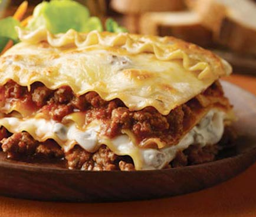

Lasagna

Ingredients
- 2 tablespoons olive oil
- 1/2 onions, chopped
- 2 cloves of garlic, minced
- 1 carrot, chopped
- 1 slice of saladet tomato, halved
- 1 can of tomato puree, large
- 1 onion, finely chopped
- 1 clove of garlic, minced
- 1 kg of ground beef
- 1 glass of white wine, dry
- 3/4 kg of ricotta cheese
- 2 eggs
- 1/2 slices mozzarella cheese, grated
- 2 cups Parmesan cheese, grated
- 1/2 cups parsley, chopped
- salt
- peppers
- nutmeg
Preparation
- Sauté the onion, garlic and carrot, add the tomato and puree and leave on very low heat once it boils for about an hour, pass through the strainer and reserve the bolognese sauce.
- Sauté the onion and garlic until they color for about 20 minutes in the olive oil, add the meats and let them not turn pink, add the prepared tomato, the wine; Spice with salt and pepper.
- Stir the ricotta cheese with the eggs, 1 cup of the Parmesan, parsley, salt, pepper and nutmeg.
- Boil the lasagna sheets in salted water and let them al dente. Drain and reserve.
- Grease a refractory mold with butter. Put a layer of pasta, then the ricotta cheese and spread with a spatula, put meat sauce and mozzarella cheese, so on to finish with pasta, ricotta and cheese.
- Cover with aluminum foil and bake for 20 minutes. Remove the aluminum foil and let it lightly brown for about 10 more minutes